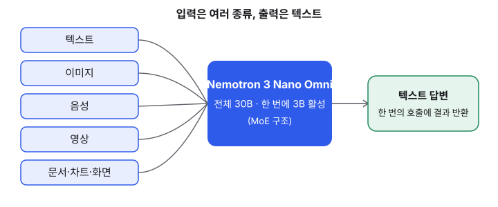
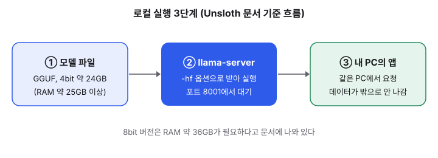

Nemotron 3 Nano Omni: 한 모델로 보고 듣고 읽는 오픈 모델을 내 PC에서 돌려 보기
- NVIDIA가 2026년 4월 28일 공개한 오픈 모델 Nemotron 3 Nano Omni가 최근 로컬 실행 가이드에서 다시 자주 다뤄지고 있다. 이번 수집 구간에서 새 발표는 확인하지 못했다.
- 전체 약 30B 규모지만 한 번에 3B 정도만 계산에 쓰는 MoE 구조이고, 텍스트·이미지·음성·영상·문서를 한 모델에서 받는다. 출력은 텍스트다.
- 4bit 양자화 파일(약 24GB)과 llama.cpp의 llama-server를 쓰면 내 PC에서 모델을 띄워 요청을 보내 볼 수 있다. 다만 RAM이 넉넉해야 한다.
요즘 개발자 커뮤니티에서는 "클라우드 API 없이 내 노트북에서 여러 종류의 입력을 처리하는 모델을 돌릴 수 있나?"라는 질문이 자주 보입니다. 이 질문에 가장 구체적으로 답하는 모델 중 하나가 NVIDIA의 Nemotron 3 Nano Omni입니다. 이 글은 오늘 새로 터진 소식이 아니라, 공개된 지 몇 달 된 모델이 로컬 실행 가이드로 다시 정리되고 있다는 점을 짚고, 입문 개발자가 직접 띄워 볼 수 있는 방법까지 다룹니다.
01한눈에 보기
식당에 직원이 100명 있다고 해 봅시다. 손님이 주문할 때마다 100명이 모두 달려들면 비효율적입니다. 주문 종류에 맞는 몇 명만 불러서 일을 시키는 방식이 훨씬 효율적이겠죠. 이것이 MoE(Mixture of Experts, 여러 전문가 중 일부만 호출하는 구조)의 기본 아이디어입니다. Nemotron 3 Nano Omni는 전체 약 30B 규모지만, 한 번에 약 3B만 계산에 참여합니다. 그래서 큰 모델의 지식을 가지면서도 실행 비용은 작은 모델에 가깝게 맞추려는 설계입니다.
여기에 "Omni"라는 이름이 붙은 이유는 입력 종류가 많기 때문입니다. 글자만 읽는 모델이 아니라, 이미지·음성·영상·문서·차트·화면까지 한 모델에 넣을 수 있다고 NVIDIA는 설명합니다. 출력은 텍스트입니다.

02어떻게 동작하나요
입력 단계에서는 텍스트, 이미지, 음성, 영상, 문서가 들어옵니다. NVIDIA 블로그에 따르면 모델의 구조는 Conv3D와 EVS를 포함한 30B-A3B 하이브리드 MoE이며, 컨텍스트 길이는 256K입니다. 처리 단계에서는 MoE 라우팅이 입력마다 필요한 전문가만 골라 계산합니다. 출력 단계에서는 텍스트로 답변이 나옵니다. 쉽게 말해 "여러 감각으로 받아들이고, 말로 답하는 에이전트의 두뇌"에 가까운 역할입니다.

03왜 지금 화제인가요
솔직히 말하면, 이번 수집 구간(전날 16:30 ~ 오늘 16:00 KST)에서 Nemotron 3 Nano Omni의 새 발표는 확인하지 못했습니다. 공개는 2026년 4월 28일이었습니다. 그럼에도 이 모델을 다시 볼 이유는 두 가지입니다. 첫째, Unsloth 문서에 llama.cpp 실행 명령과 메모리 요구량이 정리되어 있어 노트북에서 시도하기가 쉬워졌습니다. 둘째, 모델 카드에 GGUF 변환본과 Ollama 실행 명령이 함께 올라와 있어 "로컬 멀티모달 모델"을 찾는 사람이 쉽게 발견할 수 있는 상태입니다. 다만 이 두 가지는 제가 확인한 문서 상태이지, 이번 주 커뮤니티 반응을 직접 측정한 결과는 아닙니다.
04관련 나라·기업
| 구분 | 이름 | 어떤 관련이 있나 |
|---|---|---|
| 기업 | NVIDIA | 모델을 설계하고 공개한 회사입니다. 블로그와 모델 카드를 1차 자료로 썼습니다. |
| 플랫폼 | Hugging Face | 원본 가중치와 GGUF 변환본을 올려 내려받을 수 있게 한 곳입니다. |
| 커뮤니티 도구 | Unsloth | GGUF 양자화 파일과 실행 가이드를 만든 곳입니다. 공식 NVIDIA 문서가 아니라는 점을 기억하세요. |
| 나라 | 미국 | 모델 개발사 NVIDIA가 있는 나라입니다. |
05기존 방식과 무엇이 다른가
| 비교 항목 | 기존 방식 | Nemotron 3 Nano Omni |
|---|---|---|
| 입력 종류 | 글자 모델, 그림 모델, 음성 모델을 따로 붙여 쓰는 경우가 많습니다. | 텍스트·이미지·음성·영상·문서를 한 모델에 넣습니다. |
| 실행 위치 | 대부분 클라우드 API를 호출합니다. | GGUF 파일을 받아 내 PC에서 띄울 수 있습니다. |
| 준비물 | API 키와 결제 수단이면 바로 시작할 수 있습니다. | 4bit 기준 RAM 약 25GB 이상이 필요합니다. |
| 데이터 위치 | 입력 데이터가 외부 서버로 전송됩니다. | 같은 PC 안에서 처리하면 외부로 나가지 않습니다. |
06직접 해 보기
아래 명령은 Unsloth 문서에 실린 예시를 그대로 옮긴 것입니다. llama.cpp가 먼저 설치되어 있어야 하고, 명령의 경로(./llama.cpp/)는 설치 위치에 맞게 바꿔야 합니다. 처음에는 4bit 버전(UD-Q4_K_XL)을 권합니다. 8bit 버전은 RAM 약 36GB가 필요하다고 문서에 나와 있습니다.
./llama.cpp/llama-server -hf unsloth/NVIDIA-Nemotron-3-Nano-Omni-30B-A3B-Reasoning-GGUF:UD-Q4_K_XL --temp 0.6 --top-p 0.95 --port 8001처음 실행하면 모델 파일을 내려받는 데 시간이 걸립니다. 서버가 뜨면 터미널에 나온 주소로 접속해 보세요. Ollama에서는 이 모델의 비전 GGUF가 아직 동작하지 않는다는 경고가 Unsloth 문서에 있으니, 이미지까지 쓰려면 llama.cpp 계열 실행 방법을 쓰는 편이 안전합니다.
07주의할 점과 한계
- "9배 효율"은 NVIDIA의 자체 주장입니다. 본문 기준으로는 같은 상호작용성에서 다른 오픈 옴니 모델 대비 처리량이 9배라는 뜻이며, 독립적인 벤치마크로 검증한 결과가 아닙니다.
- 파라미터 표기가 자료마다 다릅니다. NVIDIA는 30B-A3B로, Hugging Face 모델 카드는 31B A3B로 적혀 있습니다. 글에서는 30B로 썼습니다.
- 라이선스는 NVIDIA Open Model Agreement입니다. 상업적으로 쓸 계획이라면 원문 조건을 직접 확인하세요. 이 글은 법률 자문이 아닙니다.
- 하드웨어 요구량은 문서 기준 숫자입니다. 실제 속도는 GPU, 메모리 대역폭, 양자화 버전에 따라 크게 달라집니다.
- 이번 수집 구간에서 날짜가 확인된 최신 평가 글은 찾지 못했습니다. 최신 성능 비교가 필요하면 직접 같은 질문으로 돌려 보는 것이 가장 확실합니다.
08정리
Nemotron 3 Nano Omni의 핵심은 "여러 종류의 입력을 한 모델로 받고, 실행할 때는 일부 전문가만 쓰는 구조"입니다. 입문 개발자에게 의미가 있는 부분은 이 모델이 클라우드 API 없이도 내 PC에서 실험해 볼 수 있는 수준까지 내려왔다는 점입니다. 그래서 이미지나 문서를 다루는 작은 도구를 만들어 보고 싶다면 좋은 실험 대상이 됩니다.
다만 메모리 요구량과 라이선스를 먼저 확인하세요. 오늘 당장 새 소식이 있었던 모델은 아니므로, 가볍게 띄워 보고 결과를 직접 비교해 보는 것이 가장 좋은 공부 방법입니다.
09참고한 글
- NVIDIA Launches Nemotron 3 Nano Omni Model, Unifying Vision, Audio and Language for up to 9x More Efficient AI Agents NVIDIA 블로그 · 2026.04.28
- Nemotron 3 Nano Omni 실행 가이드 Unsloth 문서 · 날짜 미표기
- unsloth/NVIDIA-Nemotron-3-Nano-Omni-30B-A3B-Reasoning-GGUF Hugging Face 모델 카드 · 날짜 미확인